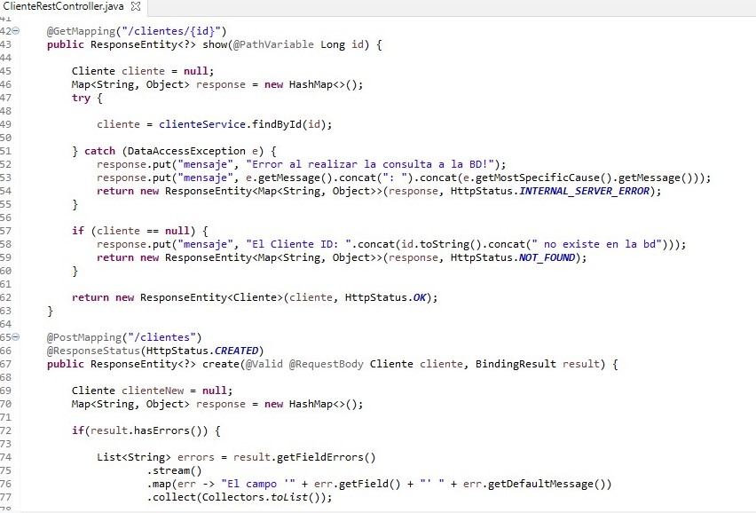

Desarrollo
Para esta ocasión se modificó el proyecto de FerreGym para adaptarlo a otras tecnologías, se trabajó en dos partes separadas la parte del Backend qué es Spring y la parte del Frontend con Angular, estas dos partes se comunican a través de una Api Rest.
Frontend Con Angular
Link al repositorio en GitHub
Angular es un framework para aplicaciones web desarrollado en TypeScript, se utiliza para el desarrollo y mantenimiento de aplicaciones web de una sola página conocidas como Single-page application, con este framework creamos un crud básico para la administración de la información de los clientes de la empresa.
Ejemplo de Código
En el siguiente ejemplo se puede observar a la clase de servicio, en esta se tiene las operaciones basicas de un CRUD como son crear, editar, eliminar un cliente.
create(cliente: Cliente) : Observable{ return this.http.post (this.urlEndPoint, cliente, {headers: this.httpHeaders}).pipe( catchError(e =>{ if(e.status==400){ return throwError(e); } Swal.fire('Error al crear el cliente', e.error.mensaje, 'error'); return throwError(e); }) ); } getCliente(id): Observable { return this.http.get (`${this.urlEndPoint}/${id}`).pipe( catchError(e => { this.router.navigate(['/clientes']); Swal.fire('Error al editar', e.error.mensaje, 'error'); return throwError(e); }) ); }
Backend con Spring
Link al repositorio en GitHub
Al igual con el proyecto anterior, para la parte del Backend se usó Spring pero en esta ocasión para conectar con Angular, se utilizó la tecnología de Rest, así que se creó en vez de un controlador normal, se utilizó un RestController tecnología de Spring para crear web Services pero con REST.
Ejemplo de Código
En la siguiente imagen se puede observar el código correspondiente al controlador de la entidad de Cliente, pero esta vez utilizando la tecnología de REST.
Imagenes de muestra
En el siguiente slider se muestran algunas imágenes acerca del funcionamiento de la aplicación.